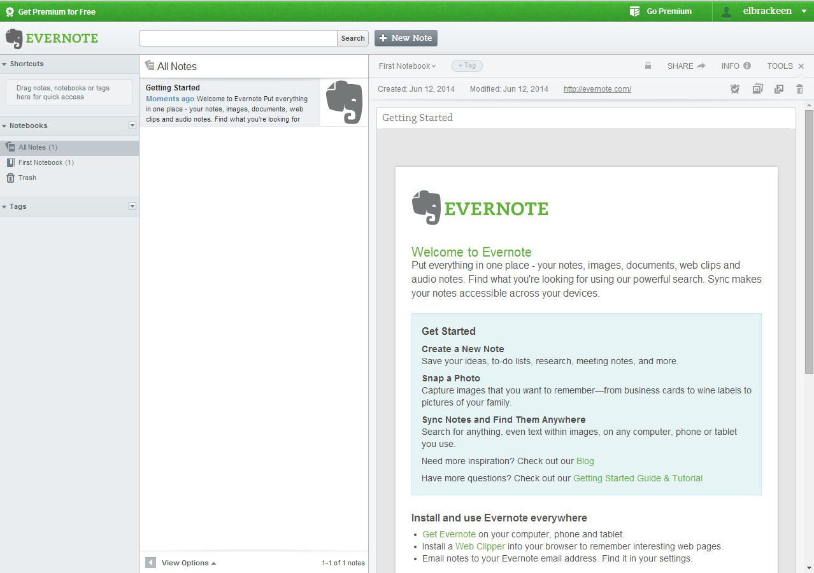
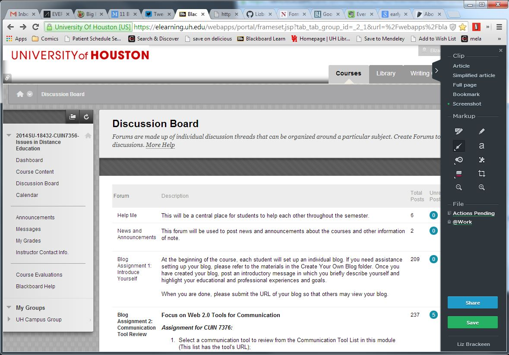
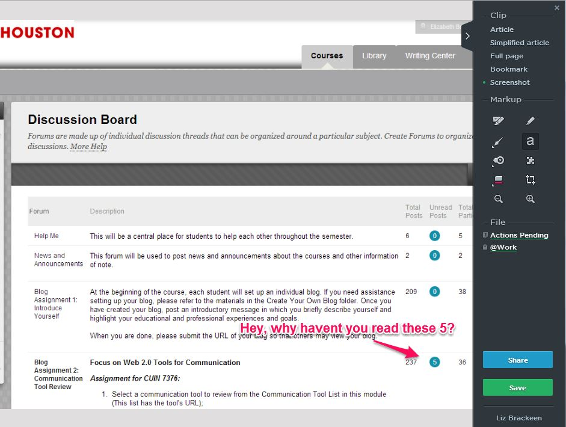
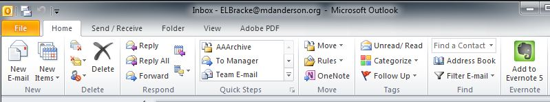

Evernote is a productivity and collaboration tool and it is the app that walks into the room, shakes your hand while introducing himself and three minutes later you are writing a book chapter together with his new friend Moleskine.
Evernote is fundamentally a place to take notes and tag them, it is extraordinarily useful because you can take any kind of note from virtually anywhere. It is a place to store all of your digital things and your thoughts about those things.
You can use Evernote as web-only but it is also available on Microsoft Windows, OS X, Android, iOS, Windows Mobile, Windows Phone, and BlackBerry. There are also add-ons, extensions and plug-ins to software you are already using to making adding notes to Evernote easy. To start using ever note you simply register, login and click on Add Note. From there you can make it as simple or as complicated as you like.
When you register and first login on the web Evernote looks like this:
To add a new note you hit the New Note button at the top of the screen and start typing or pasting in links or pictures. To add a note in when you are away from Evernote you have a lot of options, you can use the chrome web clipper extension (pictured below on the right hand side of the screen) to add in a full web, page, a screenshot of a web-page or a simplified, text only version of a webpage.

You can then use the Markup tools to make notations for yourself and/or others and save those notes along with the website clip to a Notebook within Evernote that you can then access from any of your devices.
Evernote can be used within Microsoft Outlook to move things from you inbox to your notebooks
Using Evernote systematically can have a steep learning curve. I have been a member since May of 2008 and I have used it to keep a shared list of home projects, take notes during conferences and do personal time tracking. But, it was not until 6 months ago that I began using The Secret Weapon The Secret Weapon it to sustainably implement GTD in my life.
Evernote has web, mac, windows and mobile applications. The notes you have will sync across all of these apps. The functionality of the windows and mac applications is quite different and can cause some frustrations in daily use. If you work in a mixed environment best to pick either windows or mac until you are comfortable with Evernote.
If I were using Evernote for teaching I would set up folders for each of my students and share those folders with them individually so that we could both put files in there. I would set up folders that corresponded with my syllabus, for example if I were teaching this class I would set up a folder for each module. I would also have a folder where I put ideas to implement or change the next time I teach the class. I would set up a tagging system that corresponded to all of my action items. I would use reminders for scheduled, class-wide communications. I would read all of The Nerdy Teacher’s Epic Evernote Posts before embarking on such and endeavor.
There are countless advantages to using Evernote in a formal or informal teaching environment however they all hinge on the one major disadvantage, you have to use Evernote consistently. If you have some of your stuff in DropBox and some on Google Drive and some on your Desktop and it is not likely that you will consistently use Evernote then teaching with it is probably not for you. The Evernote faithful spent lots of time setting up their folders and tags and they use Evernote for everything, which is what makes it a very powerful tool for them. For those of us who are more casual users of Evernote the incessant marketing of new apps and tools and partners can be annoying, but it is a small price to pay for such a powerful and free software suite.
I would highly recommend Evernote to anyone who has a lot of web-based materials that they would like to store and organize in a manner that is integrated with their other tools. I would highly recommend Evernote and The Secret Weapon to any Outlook or Thunderbird user who wants to implement a lean systemic productivity methodology. I would moderately recommend Evernote to anyone wants to be able to access and share synced notes from their computer/phone/web.